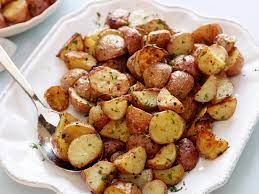

Roasted Potatoes

Description
Roasted potatoes are a great comfort food. They are also surprisingly easy to prepare.
This goes great as a side dish for many different meals, like meatloaf or chicken cutlets. It's also healthier than having deep fried potatoes like french fries.
Ingredients
- 6 Potatoes (Yukon Gold or Red preferred)
- 3 Tbsp Olive Oil
- Salt and Pepper 1 tsp each
- Garlic Powder 1 tsp
- Paprika 1 tsp
Directions
- Heat oven to 375 degrees
- Quarter the potatoes
- Mix the salt, pepper, garlic powder and paprika
- Toss the potatoes with the spice mix and olive oil
- Place in a oven safe pan and bake for 35 minutes
- Remove from the oven and let sit for 5 min before serving